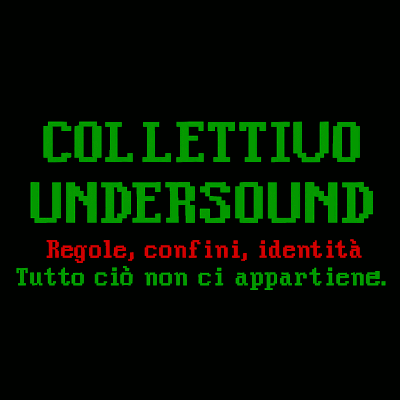

üåç Caco Poco Ma Caco Meglio üåç

COLLETTIVO UNDERSOUND
üí© Transito Quantico Metabolico üí©
⚡ Effetto Farfalla Intestinale ⚡
ü߆ Portale del Retto Globale ü߆
Questo non è un film.
È una cacca sacra che si ripete all’infinito.
Ogni frame è un rant.
Ogni pixel è una scorreggia.
Ogni intestino è un portale.
Il tuo browser non supporta l’audio.